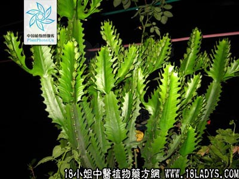

别名：簕羊、笋大黄、羊丫。
植物名：火殃勒。
生长环境：本品为直立肉质、多年生植物。郊外村落一般栽作围篱。
生长环境：广布于亚热带，我国南部与西南部均产之。
入药部分：鲜茎。
采集期：全年采茎。
自采地点：家种。
性味：性热、味辛、有刺激性、有微毒。
功能：：祛风、行气。
主治、用量和用法：1、霍乱、搅肠痧：用鲜茎8两，去青皮、切片、炒透，清水三碗，煎成一碗，热服；2、牙痛：鲜茎约二寸，挖去心，藏入咸榄一个，煨透，去火殃勒，取榄，嚼汁含服；3、久流虚浊：鲜茎4两，去青皮，切片加猪瘦肉适量，清水五碗，煎成碗半，温服；4、花柳芒果：切开鲜茎，取汁，取青壳鸭蛋一只，开小孔，将汁一钱，大黄末5分，入蛋内，煨熟，去壳食，食后泻下。
（方歌）火殃勒治大症嘉，霍乱花柳绞肠痧，夹色白浊及牙痛，沉疴速起效堪夸。
附录：（叶）试霍乱，夹色：鲜叶两片，生嚼，夹色症觉其味甜；霍乱症觉其味酸。正常人嚼之，苦味及刺激舌部。
（根）治牙痛、气痛：干根1两，清水三碗，煎成一碗，温服。
禁忌：初起白浊忌服，本品能使皮肤起泡，嫩肉切用，并不可将其汁入眼。
参考资料：《广东中医验方交流汇编》治习惯性便秘方：火殃勒流出的汁液，加适量番薯粉为丸，入绿豆大，用新风烘干候用，每次服一丸（开水调匀）。此丸服后四小时便泻，无副作用，亦无肚痛。
《广州市中医验方选集第一集》治酒后脚痛验方：火殃勒树青3钱，水煮数沸，晒干为末。取小公鸡一只约十两，去头足，内脏等，酒淬之。然后将火殃勒干末3钱，拌鸡肉下锅以酒再淬三、四次，又下双料酒1斤半煮沸，饮酒并食鸡肉，有效。
《广州常用草药验方集解》治疗心胃气痛经验方：生火殃勒心三两（去尽薄皮），用水三碗，煎成一碗，内服。本品汁液有毒，不可入眼，切制时宜注意。其液外敷竹木入肉，可以拔出。其心化气止痛，治心胃气痛有效。